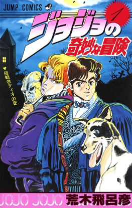
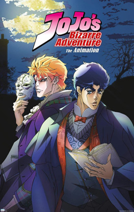

Opening
Sono Chi no Sadame
Portada
Manga
Anime
Historia del manga/anime
JoJo’s Bizarre Adventure: Phantom Blood es la primera parte del manga creado por Hirohiko Araki. Se publicó originalmente entre 1987 y 1988 en la revista Weekly Shōnen Jump de la editorial Shueisha. Esta parte cuenta con 44 capítulos recopilados en 5 volúmenes, y marca el inicio de la extensa saga familiar de los Joestar.
La historia sigue a Jonathan Joestar, un joven noble inglés del siglo XIX que debe enfrentarse a Dio Brando, un huérfano ambicioso adoptado por su padre. Dio utiliza una antigua Máscara de Piedra que lo transforma en un poderoso vampiro, desatando un conflicto que combina acción, drama y elementos sobrenaturales. A través de este enfrentamiento, se presentan los primeros temas característicos de la serie, como el honor, la valentía y el legado familiar.
En su adaptación al anime, producida por David Production y emitida en el año 2012, Phantom Blood ocupa los nueve primeros episodios de la serie JoJo’s Bizarre Adventure (2012). Esta versión animada recrea fielmente los eventos del manga y sirve como introducción al estilo visual y narrativo único de la obra de Araki.